Additive manufacturingFormnext 2026
Laser Power Optimisation: Tackling Thermal Gradients in Metal LPBF with Autodesk ATU, Fusion and Netfabb
Static process parameters cause overheating, failing downskins and inhomogeneous properties in metal laser powder bed fusion. Read on to see how Autodesk's power optimisation workflow adapts laser power in 2D, 2.5D and 3D, and how ATU, Fusion and Netfabb bring it together.
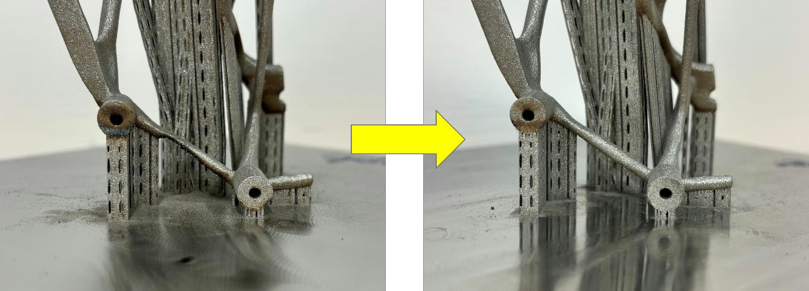
Why static parameters fall short
The images in Figure 1 show typical LPBF defects that can be tracked back to the use of static parameters. For example: Discolouration through overheating on contours and downskin surfaces or failed overhanging structures due to thermally induced stresses.
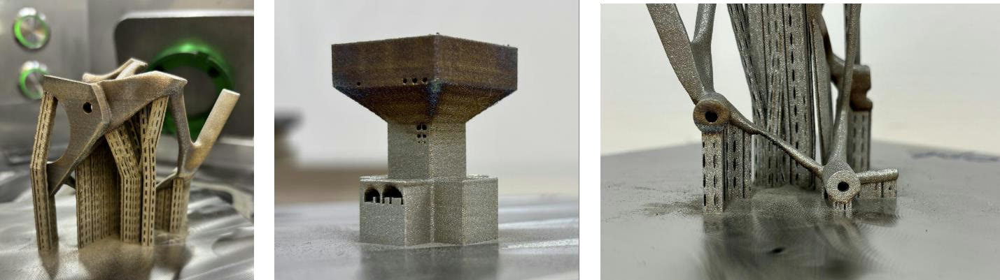
Some pioneers in the field identified this issue early on. At the Solid Freeform Fabrication Symposium 2019 in Austin, Texas, Pichler et al. for example, presented the drawbacks of using static process parameters in LPBF. They introduced a measure called repetition time: the time interval that passes before an already exposed point in a hatching pattern is re-exposed by its neighbouring hatch path. A more recent study from 2020 by Yeung et al. defines a metric called Residual Heat Factor (RHF). They both share the metric of time passing between spatial points being re-exposed by the laser beam.
LPBF hatching strategies rely on the overlapping exposure of melt tracks to yield dense parts. The most widely used hatching strategy is a bidirectional stripe strategy based on a fixed stripe width/hatch path length. Most density measurement specimens are built with this static strategy.
First problem: In real parts, the hatching paths get clipped by contours of the real geometry, leaving shorter than ideal hatching stripes behind, demonstrated on a simple rectangle, with and without constriction in Figure 2.
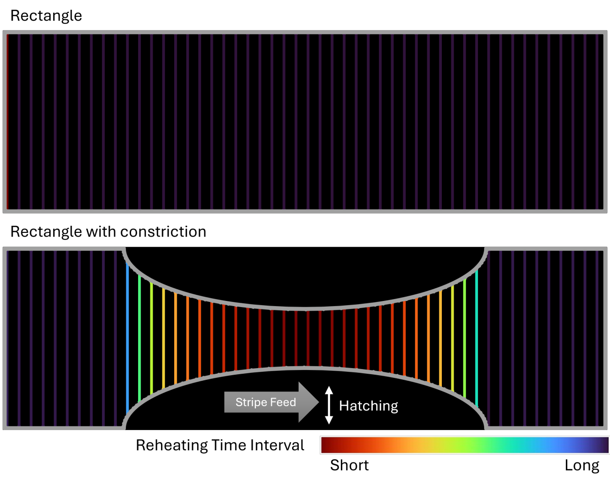
This change from an “optimal” hatch path length and Reheating Time Interval to a very short one can lead to overheating in the constricted region.
One might assume that the red regions should yield a constant thermal behaviour since the Reheating Time Interval stays constant. That is not the case.
Second problem: Stripe hatch paths are not exposed as a full line but gradually with a constant speed. Especially on hatch path reversals at the end of each path, the Reheating Time Interval will vary as shown in Figure 3.
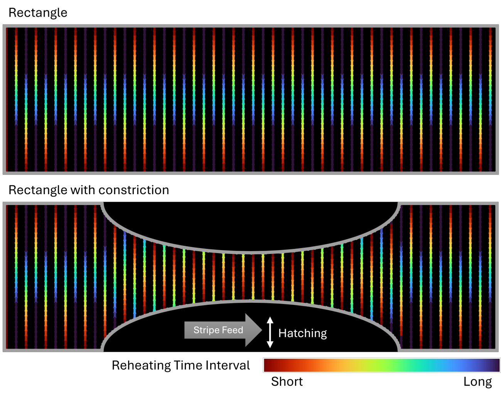
Tracking the Reheating Time Interval along a hatch path reveals the real problem within a static bidirectional stripe hatching strategy. Short Reheating Time Intervals concentrate overheating at the reversal points of the hatch path, at the edges of a stripe. This is superimposed by the overall time influence of shortening hatch paths of a constriction.
Third problem: Downskin regions are assigned a static parameter that, in most cases, only considers the area that is free floating above loose powder. Heat-conducting, already solidified material in proximity is not considered for laser power or a preferred scanning direction. Figure 4 shows the exemplary calculation of downskin areas still commonly used throughout the industry.
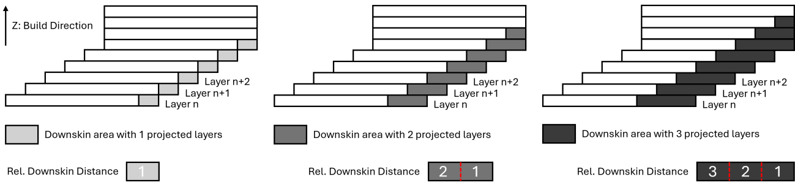
Downskin areas are calculated through a layer reference parameter. This parameter tells the toolpathing calculation, how many layers or layer thicknesses below the current layer should be projected into the current layer as downskin area. The resulting area can be larger than the real overhanging area. This leads to one large area with different depths of solidified material underneath. One parameter set will be used to expose the whole area even though heat conductivity and capacity might differ leading to inhomogeneous melting behaviour.
Fourth problem: The first 3 problems focused on the process dynamics of a single layer. Unfortunately, the LPBF process takes place in 3 spatial and 1 temporal dimension: thermal distributions vary with build time and the geometry of the build job. More lasers might increase the build-up rate but also input significantly more energy in a shorter period of time, and larger build volumes hold more powder and solidified material, which changes the heat distribution for each machine, optical setup, material and parameter set. Predicting the resulting thermal behaviour requires time-consuming iterative calculations that are only as accurate as their input values.
All problems for themselves are already challenging, but they all need to be addressed at the same time to yield the promised result of uniform, high-quality metal AM parts. To tackle this seemingly overwhelming challenge, we designed a 3-level workflow for thermal process optimisation.
One workflow, three levels of optimisation
Power optimisation works at three levels of geometry awareness: 2D, 2.5D and 3D. Each level addresses a different part of the thermal problem, and the results of the lower levels feed into the higher ones.
- 2D: Vector-to-Vector and Microvectorisation. Reduces thermal gradients within a layer.
- Vector-to-Vector optimisation tackles thermal gradients along a stripe hatch pattern (stripe level)
- Microvectorisation tackles thermal gradients along a single vector inside a stripe hatch block (vector level)
- 2.5D: Voxel-based Downskin. Takes the reduced heat conductivity below the layer into account.
- Tackles the varying thermal gradients close to downskin surfaces
- Superimposes the 2D optimisation, since the two levels are not mutually exclusive
- 3D: Thermomechanical Simulation. Looks at the full build job instead of a single layer.
- Uses the optimisation data from 2D and 2.5D as input
- Predicts deformation and the spatio-temporal heat distribution over the course of a full build job
- Predicts further power adaption and dynamic pause times between layers
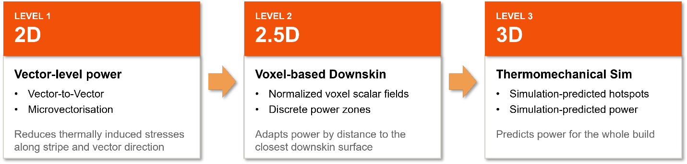
Each level is designed to work independently from each other. So, if you are only interested in the vector-based approach, use only that. If you only want to control the heat input over the course of a large build job, only use the thermomechanical simulation level. The interfaces between the levels are designed to work with and complement but not depend on each other.
2D: Vector-to-Vector power optimisation
Thermal gradients on a layer basis are the result of the reheating interval time between adjacent hatch paths. The simplest approach to achieve stress relief is a vector-by-vector comparison. By taking the scanner dynamics, hatch and jump times into account we can predict possible overheating regions. Those timing values can be used to predict power values at toolpath creation without the need for a time-consuming thermomechanical simulation.
Figure 6 shows a false colour representation of the power prediction, visualised in the Autodesk Advanced Toolpath Utility (ATU). In Autodesk Fusion, this feature is available through a custom Encrypted Build Processor Archive (EBPA) and the Open-LPBF-Buildstyle, so what you see in ATU is what ends up in your build job.
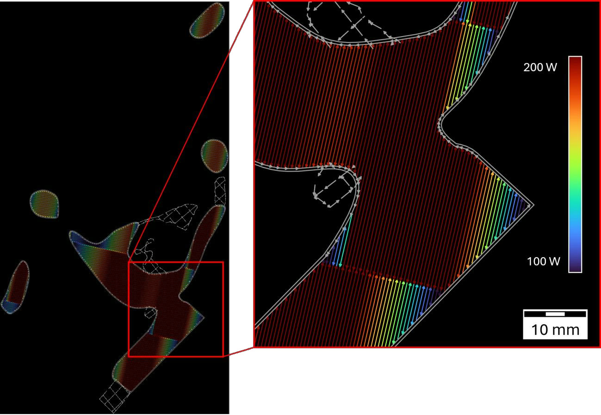
We can clearly see that the algorithm predicts lower power for short vector sections and gradually ramps the power until reaching the maximum allowed power in sections where the reheating time interval is long enough.
In practice: optimised vs. not optimised
We were able to verify our prediction on our One Click Metal LPBF machine at the Autodesk Tech Centre in Birmingham, UK. Figure 7 shows a side-by-side comparison between an optimised and a non-optimised part (75 x 75 x 75 mm³). We deliberately printed with an elevated oxygen level in the atmosphere to force a discolouration of overheating areas. Furthermore, no downskin parameters were applied to solely focus on the effects of our power optimisation approach.
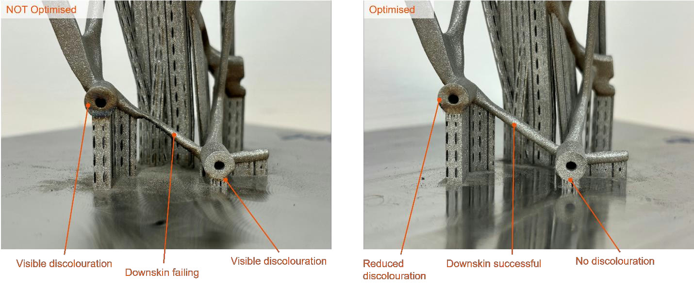
We greatly reduced overheating-induced discolouration even in the downskin areas, which were not specifically optimised. This will be addressed through 2.5D optimisation. The most significant improvement is the reduction of thermally induced stresses, which enabled a clean downskin print instead of a failing beam.
2D: Microvectorised power optimisation
In the previous step we showed what can be achieved by simply adapting the laser power to the physics of the LPBF process on a stripe level. This only addresses one dimension of the reheating time problem. When exposing hatch paths in a bidirectional stripe pattern, the reversal points at the end of each hatch path will lead to excess heat accumulation leaving overheated edges behind.
Our solution is a microvectorisation approach. Figure 8 shows a false colour representation of the microvectorised power prediction, visualised in ATU.
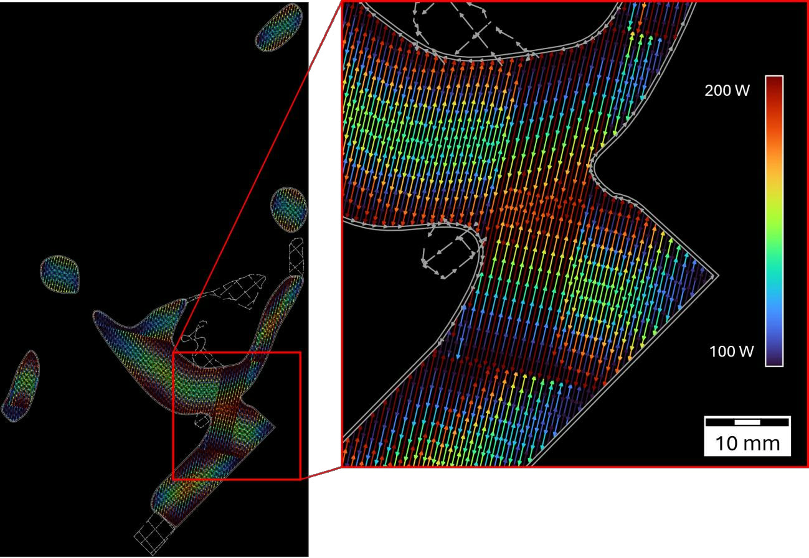
By subdividing each hatch path of a stripe pattern, we’re able to calculate the reheating time interval between those subsegments and predict the power needed to create a stable melt pool. Each subsegment gets assigned its own power value. We’ve now unlocked the next level of control and can export the toolpath data, for example to a 3mf file with its toolpath specification.
2.5D: Voxel-based downskin
With the 2-dimensional optimisation out of the way, we now need to address the downskin portions of the build job, where current handling is insufficient. Some machine manufacturers provide a proprietary solution to low downskin angles which include hatch path delays or subdividing the downskin region with discrete area subdivisions. But how many discrete areas are enough for a good result? Do they vary by material and parameter set?
Our vision is to take the burden of expensive and time-consuming parameter development away from the user. To solve the discretisation problem, we can take advantage of heat conduction metrics and apply a simple abstraction to calculate the expected heat capacity and conductivity at the position of our melt pool which will be stored as normalised scalar values from 1 to 0.
Figure 9 shows a voxelisation approach to calculate the metrics we need for our toolpath prediction. First, we convert our mesh model into a voxel representation. Second, we calculate the distance to the closest downskin surface in build-up direction for each individual voxel. Third, we can calculate an average depth value taking the surrounding voxels into account. Now we do have a representation of expected heat conductivity and capacity.
We can now query the values in the toolpath generation step. Areas with low heat conductivity and capacity will lead to a lower predicted laser power (blue) and areas with high predicted heat conductivity and capacity will be assigned a higher laser power.
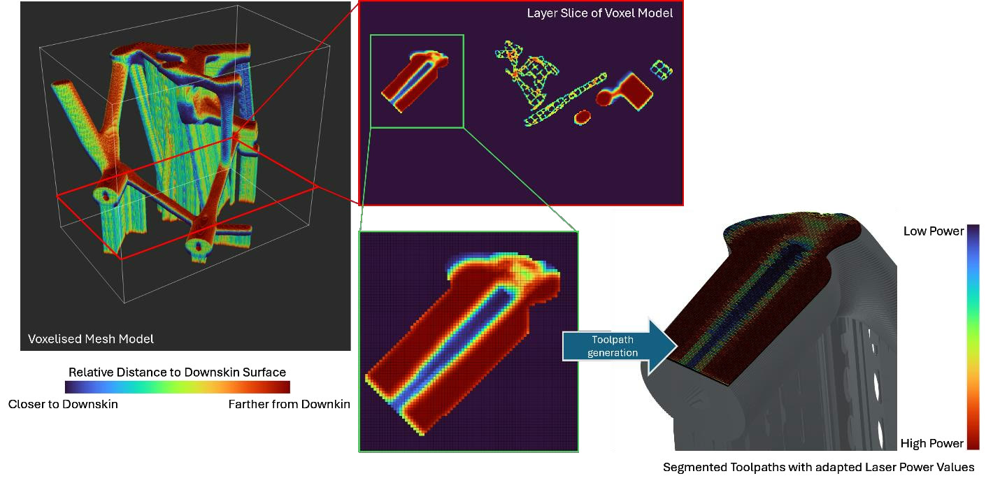
We can either use the continuous microvectorised approach of our 2D optimisation or automatically create discrete zones with varying power levels and sequence sorting. The power values calculated through the voxel field are not mutually exclusive to the 2D-optimised power values. The scalar values from the voxel grid can be seen as additional dampening factors on top of the 2D approach.
3D: Thermomechanical simulation
All techniques presented above tackle the toolpath level optimisation. What’s missing, is the full thermomechanical process behaviour over the course of a whole build job. Heat accumulates or dissipates depending on the process progress. Ever accumulating heat over the build height will influence the mechanical properties of the parts while the user is expecting a homogeneous part. Autodesk has developed a powerful simulation that predicts shrinkage in build-up direction and temperature history over the course of a build job. In Autodesk Fusion, you can run this simulation in the Manufacturing workspace on an additive setup.
Figure 10 shows a false colour representation of a thermomechanical simulation of a part in 3 states.
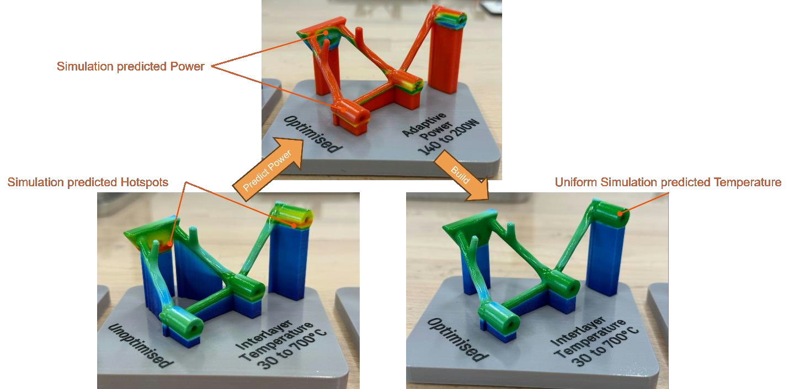
The first image shows the non-optimised state of the build job. Static parameters lead to heat hotspots across the part which will result in inhomogeneous mechanical properties.
Find additional information in our last year’s deep dive into the simulation-driven power optimisation topic.
Solving LPBF headaches
Reduced thermally induced defects
By taking the actual physical dynamics of the process into account, the thermal gradients in the build jobs are greatly reduced. Reducing recoater crashes, downskin failures, inhomogeneous microstructures/mechanical properties and keyhole pores.
No Blackbox
All calculation approaches are based on purely deterministic algorithms that are executed at toolpath generation and build job preparation. The calculated values are frozen in your build job file before it is sent to the machine and are easy to validate. There is no need for black-box monitoring systems that calculate your power values. A monitoring system allows a speedier parameter calibration but is not necessary.
Increasing efficiency
By adapting the power levels to only use the amount necessary, this approach reduces the mean energy consumption of your lasers by reducing excess energy usage. Internal calculations show a potential of up to 20% reduced on-powder power usage compared to a non-optimised build job.
How it all comes together
All three levels of power optimisation come together in the Autodesk Manufacturing Ecosystem. It starts with ATU, the development environment for toolpath strategies. This is where build styles are written, using JavaScript, so the logic behind a strategy such as the power optimisation described above stays fully in the hands of the developer. The build style code is then packaged into our Encrypted Build Processor Archive (EBPA), which can be distributed to every user of both Netfabb and Fusion.
Fusion is our full CAD/CAM solution from design to manufacturing, while Netfabb is our standalone application for AM data preparation. They serve different workflows, but both are built on the same Toolpath Kernel. Both ship with a large machine library and ready-to-use build styles serving almost every machine manufacturer in the additive landscape. Figure 11 shows the connection between the different solutions.
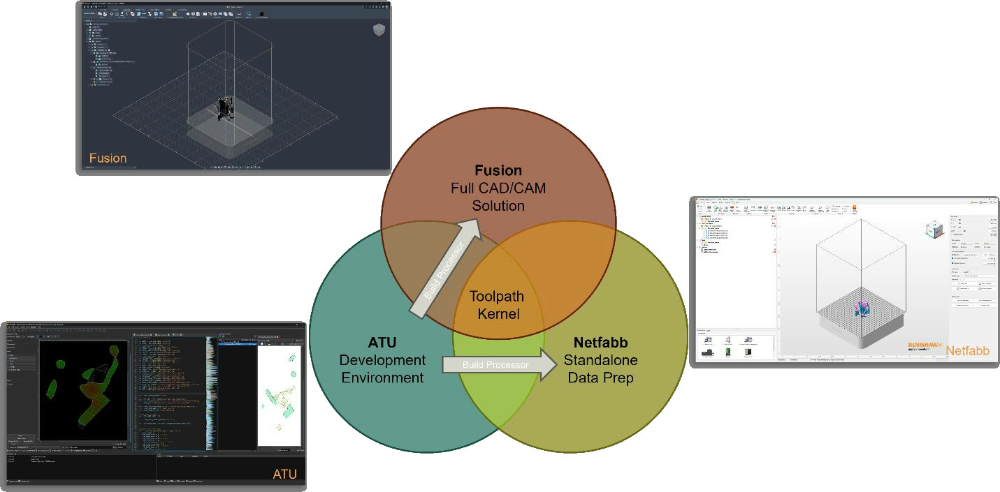
In short: ATU is where the strategy is written, the EBPA how it is distributed, and Netfabb and Fusion are where it is applied to the build job.
Try it yourself
To make the workflow accessible, we published the Open-LPBF-Buildstyle on GitHub. It contains a fully functional build style, including the 2D power optimisation approach with vector-to-vector and microvectorised power assignment. The other two levels, 2.5D voxel-based downskin level is currently available in preview, contact us for more information. The 3D thermomechanical simulation is already available through our simulation in the additive manufacturing workspace in Fusion.
Want to try the Open-LPBF-Buildstyle? The README in the repository provides step-by-step instructions, so you can try the 2D power optimisation in Autodesk Fusion, Netfabb and ATU on your own build jobs.